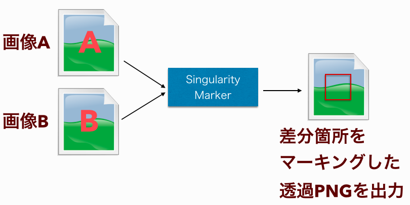

Netcom Developer's Backing #12のまとめ
1/29（金）にNetcom Developer’s Backing #12を行いました。
Google Cloud Vision APIデモ：佐藤さん
佐藤さんが、現在、限定プレビュー版でリリースされているGoogleの画像認識API Cloud Vision APIを使ったデモをしてくれました。
Cloud Vision APIの概要
認識のタイプと画像データをJSON形式でPOSTすると、画像に映る物体のラベリング結果や人の顔やテキストを検知した結果がJSON形式で返ってくるREST形式のAPIです。
ラベリング結果は可能性を表したスコアとともに複数のラベルが返ってきます。顔認識では感情の判定や顔の向きなども取得できるようです。
提供されている画像認識の種類
- FACE_DETECTION 顔認識
- LANDMARK_DETECTION ランドマークの認識
- LOGO_DETECTION 企業ロゴやブランドマークの認識
- LABEL_DETECTION 物体の認識 (ラベリング)
- TEXT_DETECTION テキストの認識 (OCR)
- SAFE_SEARCH_DETECTION セーフサーチの判定
APIの使用制限
- QPS 1
- 1リクエストあたりの画像サイズ(MB) 8 MB
- 1リクエストあたりの画像数 16
- 1日あたりのリクエスト数 (ラベリング以外) 10,000
- 1日あたりのリクエスト数 (ラベリング) 5,000
実装したもの
- クラウド9のWebサーバ上で画像アップロードとCloud Vision APIへのリクエストを行うアプリケーション
- レスポンスのJSONをそのまま表示している
- だいたいリクエストして、1.5秒ぐらいでレスポンスが返ってくる
Open CV 3.X 簡単な画像比較まで：石川さん
Open CV とは
- CV = Computer Vision
- 画像処理や解析などを行うライブラリ
Open CV 2.X と 3.X の違い
大きく分けると4つ
- マルチプラットフォーム化
- Windows, Linux, OSX, iOS, Android。 ARMサポートも。
- 多言語バインディング(Python, Java)
- C++, Java, Python(Python3 のサポート)
- モジュール分割
- opencv = opencv + opencv_contrib
- ハードウェアサポート
- T-API（Transparent API）でのOpenCL アクセラレーション
- IPPCV(インテルCPU用のOpenCV高速化命令セット)のサポート
※ http://www.buildinsider.net/small/opencv/001
どうしてOpenCVを使いたいか?
経緯
- Selenium でのエビデンスで差異を検出したい。
- 画像の差分を取る方法
- WinMerge? Kaleidoscope? → 現実的でない
- Jenkins での自動テストに組み込みたい。
→ SeleniumはJavaなのでバインディングがサポートされているOpenCVなら自分でもできそう。
JavaCV - OpenCV Java Binding
- 公式のJavaバインディング
- bytedeco/javacv
- JNI を利用してC++ のインターフェースをラッピングしている
- ffmpegなども利用可能なので動画にも対応できる。
- 様々なJVM言語で利用可能
つくりました。
o-ishikawa/image-singularity-marker（社内リポジトリ）

- 画像の差分箇所をマーキングした透過PNGを出力するプログラム
- 1枚当たり数十msで返ってくる
やっていること
- 画像の読み込み // 37
- グレースケールへ変換 // 41
- 画像の差分を取得し2値画像化 // 45
- 差分ブロックの輪郭を検出 // 49
- 輪郭をマーキング(小さな差分をフィルタリング) // 52
- 差分マーカーを画像としてレンダリング // 62
- 画像を保存 // 66
pros/cons
- 👍数十行でかなり複雑なことを実現できる。
- Java2D とか考えたくない・・・
- 👍だいたいコピペでどうにかなる。
- 👎C++をJNIでバインディングしているので生に近い。参照渡しをたくさん使う。慣れな気はする。
- 👎色変換などint定数がたくさん出てくる→ドキュメントを読みながら・・・
+ α
Diff Compare Tool
- 画像差分を確認するためのツールを作成
- SVNDiff や Kaleidoscope とかであるやつ
- HTML5 Canvas API で実装。
- Javascriptすげー。 (CCV.js というOpenCVのJavascript実装もある。)
- もうJavascriptでいいじゃん（いいじゃん）
One More Thing
OpenCV での顔認識サンプル
jami-i/javacv-face-recognition-scala
まとめ
- OpenCV を利用すると複雑な画像演算・解析機能を簡単に実装できる。
- 使わない手はない。どんどん使おう！
SORACOM Conference “Connected.“の情報共有：武内さん
SORACOMとは
- IoTデバイスのデータ通信のためのプラットフォームを提供する
- 低価格のSIMを販売してMVNO（仮想移動体通信事業者）として各種サービスを提供している
- 基本料金は 1日 1枚 10円、データ通信量は 1MB あたり 0.2円からの従量課金
- docomoの3G回線でSIMとSORACOMのクラウドサーバ（AWS）間で通信し、サーバで暗号化した上でWeb上にデータを流すことでセキュリティを確保した通信を提供している
- APIで通信をプログラムで制御することができる
事例
SORACOM Airを使った事例
- 放射線情報のオープンマップ（SafeCast）
- 路線バスの運行案内（十勝バス）
- 除雪車の位置情報管理（デザイニウム）
- スマートロック Akerunの遠隔操作（フォトシンス）
- POSレジアプリ Airレジ（リクルートライフスタイル）
- 店舗システムのバックアップ回線（東急ハンズ）
- 訪日旅行者旅行者SIMで独自従量課金サービスの運営を自動化
- simを刺した時点でsimを開通させる
- 使用量に応じた回線の制御APIなどがあるので、通信事業者でなくても通信量に応じた課金制度を自分たちで制御できる
SORACOM Beam
- データをセキュアに送信し、客層分析の結果をリアルタイムに可視化（パルコ）
新サービス
- Soracom Canal
- Amazon VPCとSORACOM（AWS）間でプライベート接続することでインターネットを介さずにセキュアなデータ通信を行うサービス
Soracom Direct
- AWS外のクラウドやDCを専用線で接続するサービス
SORACOM Endorse
- SIMからリクエストして発行された認証トークンを使って、業務システムなどのデバイス認証を行うサービス
SORACOM Funnel
- SORACOMから各種クラウドサービスへの連携を行うための各種機能（プロトコル変換、認証ロジックなど）を提供するサービス
現在、全てのサービス無料枠が使える
- ABEFは1年間の無料利用枠
- EFは2月末まで
SIMのコンソールパネルを使ってみた
どんなデータが取れるか
- 通信量
- 一意なID
- SIMの有効期限（設定可能）など
Soracom APIを使ってみた
- 回線の制御ができるAPI
- 通信速度の変更
- SIMの停止/解約
- 通信量/利用料の取得
- タグ付け
- グループなど
SORACOM Air SIMカード amazonで888円〜（2016/1/29現在）
カンファレンス講演資料
次回は2週間後の 2/12（金）に開催予定です。
（高井）